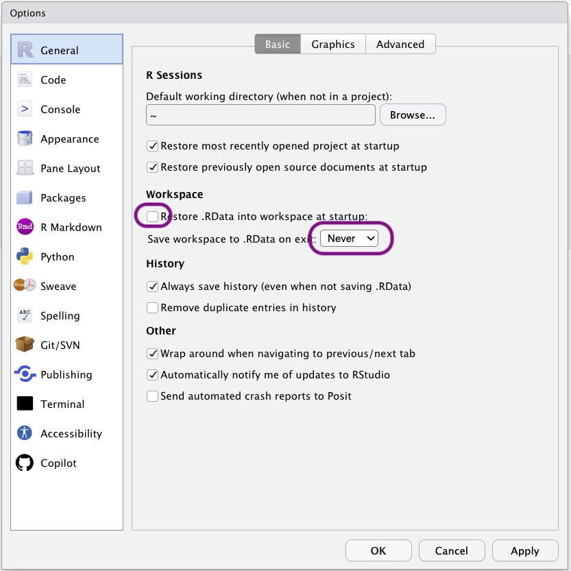
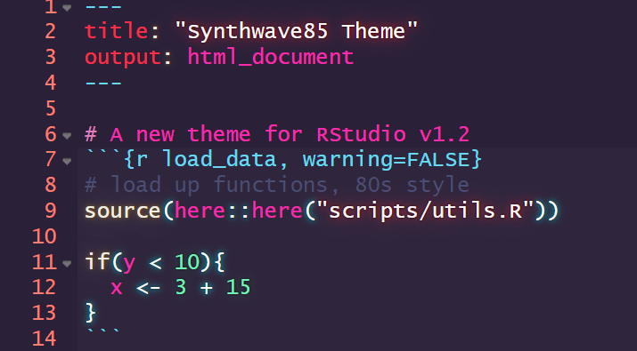
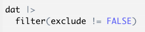
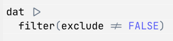

1 Installation and setup
1.1 Install the base R language and the RStudio IDE
You should install the base R language and the RStudio IDE from here.
There are detailed steps available for Windows and Mac here.
1.2 RStudio settings and options
1.2.1 Important settings to change for reproducibility
For reproducibility, please ensure RStudio’s settings never save the objects in your environment to disk on exist or load them again when opening RStudio. Open the Tools>Global Options menu, go to General, and untick the following box and set save to ‘Never’.

1.2.2 RStudio themes
RStudio can be skinned with different themes, including dark themes that may be easier on your eyes or are, at least, objectively cooler.
The objectively coolest theme of them all is Synthwave85, which can be installed by running the following line of code in RStudio’s console: rstudioapi::addTheme("https://raw.githubusercontent.com/jnolis/synthwave85/master/Synthwave85.rstheme", TRUE, TRUE, FALSE)
To change themes, click the ‘Tools’ drop down menu, then ‘Global Options’, then ‘Appearance’, then ‘RStudio Theme’.

1.2.3 RStudio fonts
Certain monospaced fonts provide the advantage of rendering common R characters or functions more nicely.
This is the same code displayed using Monaco, a built-in font:

And using JetBrainsMono, which supports rendering the base-R pipe (|>) and non-equivalence symbols as single characters

If you prefer the latter, you can download JetBrainsMono from here and install on your computer. Restart RStudio, then change the font by clicking the ‘Tools’ drop down menu, then ‘Global Options’, then ‘Appearance’, then ‘Editor font’.
1.3 Install Slack and GitHub
If you are reading this book as part of a course with me at the University of Bern, please:
- Install the Slack app. You can download it for Windows here or for Mac here.
- I will send an invitation to the course’s Slack workspace to all students enrolled in the course. Please check your @students.unibe.ch email address.
- Install the GitHub desktop app. You can download here.
- Make an account yourself on https://github.com and log into it on the GitHub desktop app. University of Bern does provide you access to a branded GitHub account, but you’ll lose access to it after you finish your studies, so it’s better to make your own private account.